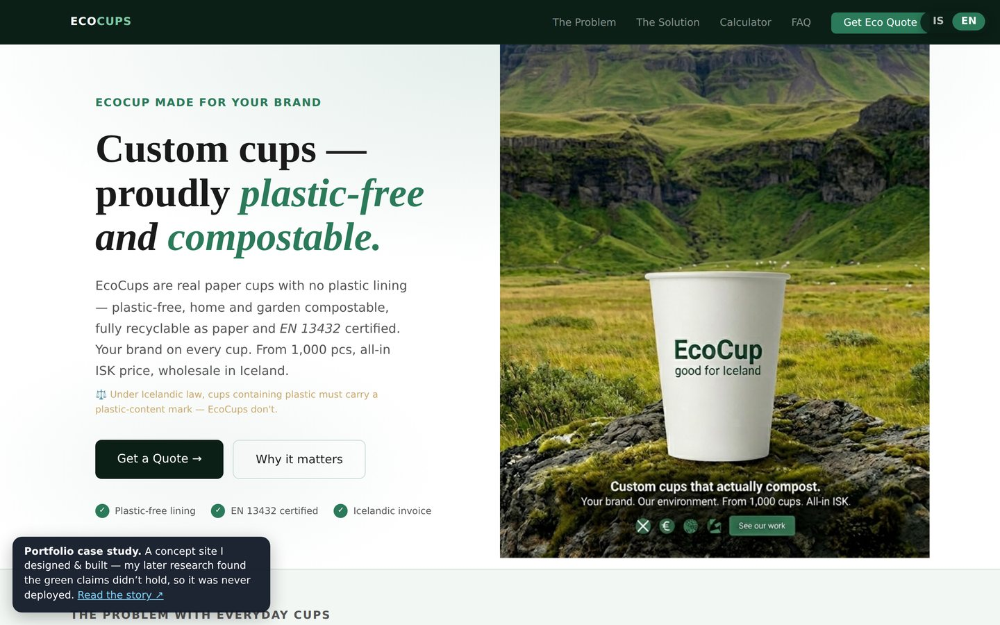
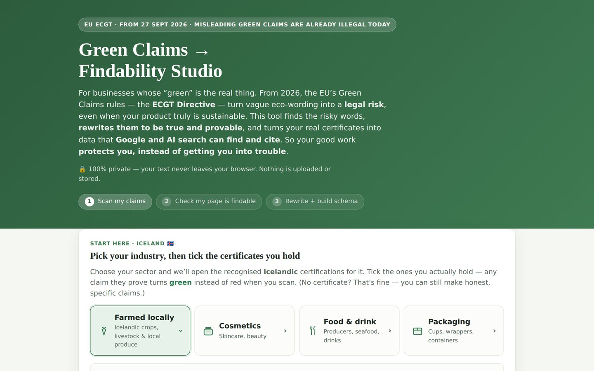
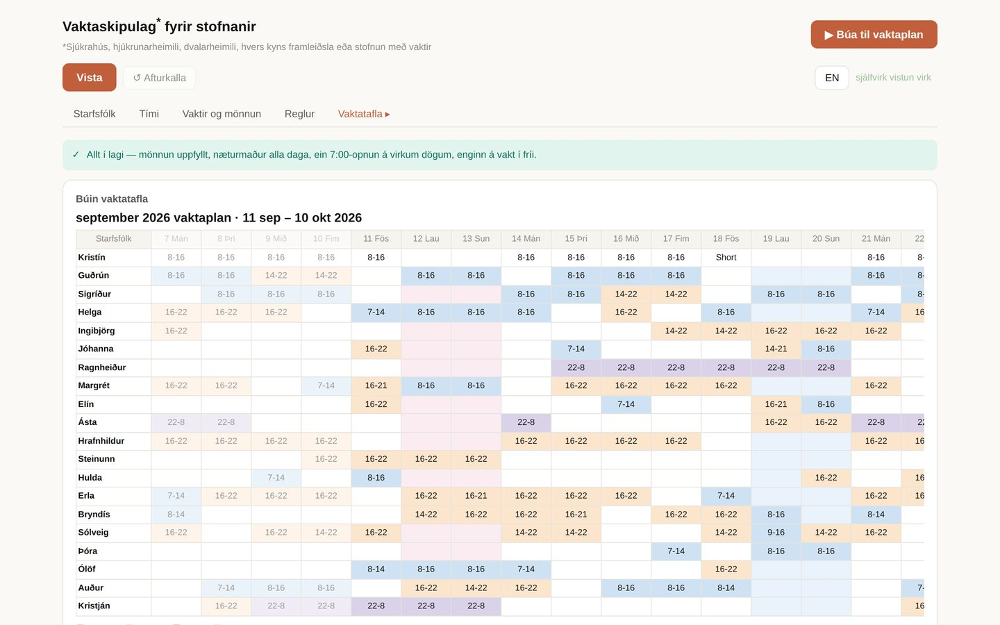
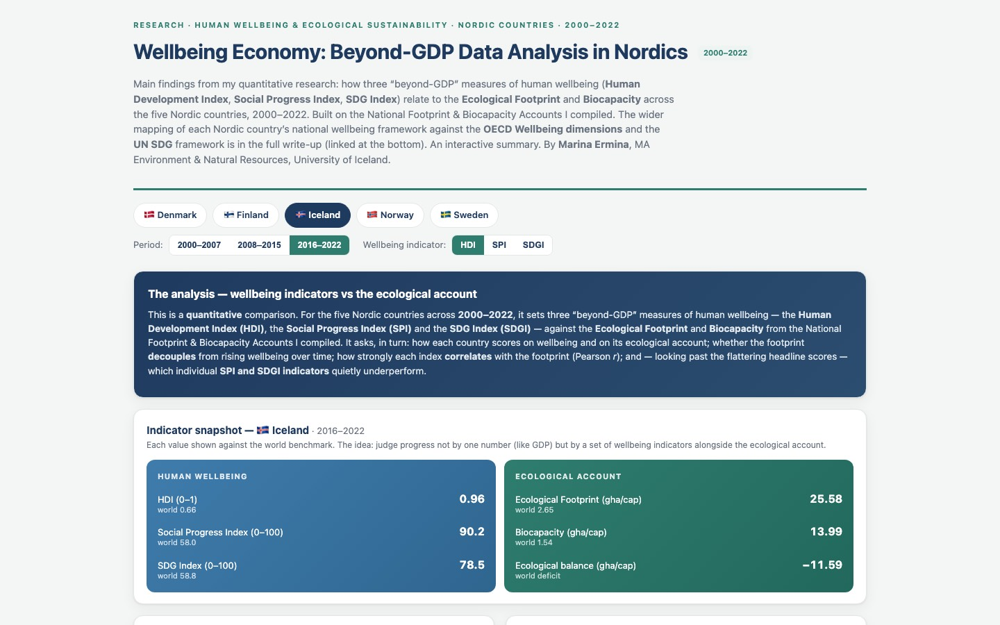
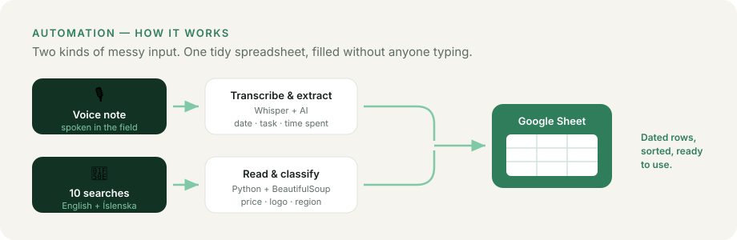
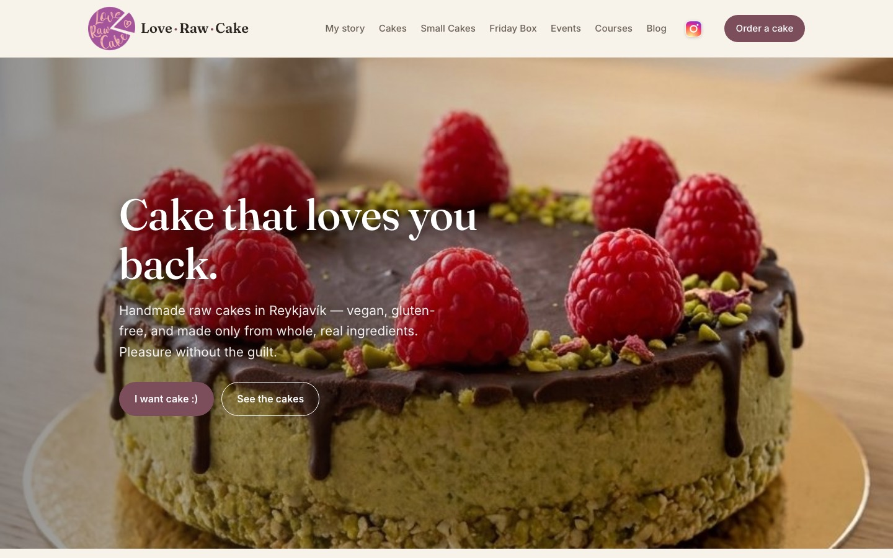

Data analyst and project manager, now building websites, automation and AI tools. Twenty years running work for international clients, two first-class Masters, and a habit that costs me projects: I check whether the claims hold up.
Download CV (PDF)I also build fast, with AI-assisted development — it’s how one person can ship this range of work, and it’s the same principle as everything else here: more with less.
Bilingual, custom-built websites for small businesses and projects — from the first client conversation to a live, responsive site.
Tools that do the repetitive work for you — voice or data into spreadsheets, scheduling, and bots that run on their own.
Checking whether "green" claims actually hold up against the rules and the evidence — before they become a problem.
Turning messy data into clear answers — cleaning, analysis and interpretation with MySQL, Python and R.

A bilingual B2B website and impact calculator for a compostable-cup line — plus the green-claims research that found the product wasn't as green as presented, so it never shipped. The build and the diligence, together.

My own service and tool. It flags risky “green” wording, rewrites it to comply with the EU rules landing September 2026, and turns real certificates into machine-readable JSON-LD — the markup Google and AI assistants read to verify a credential.

A self-contained tool that turns staff, availability and coverage rules into a fair shift rota — bilingual, editable in the browser, and GDPR-safe (demo uses fictional names).

My own research as an interactive dashboard. Three “beyond-GDP” measures of wellbeing — HDI, the Social Progress Index and the SDG Index — set against the Ecological Footprint and Biocapacity accounts I compiled, for the five Nordic countries, 2000–2022.

Two builds that take repetitive work off the table. A Telegram bot turns a task spoken in the field into a dated row in a Google Sheet, 24/7. A Python script searches suppliers in English and Icelandic and files what it finds.

A bilingual one-page site for a Reykjavík raw-cake maker, hand-coded and mobile-first. No shopping cart by design — orders come through direct contact. My first client engagement run start to finish by me.
The background behind the workAn MA in Environment & Natural Resources (University of Iceland, 2025), National Footprint & Biocapacity accounts built in MySQL, and years coordinating sustainability education.
Working on something at the meeting point of sustainability and efficiency? I'd love to hear about it.
me.mermina@gmail.com